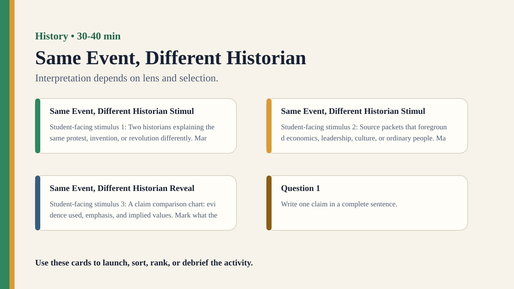

Premium draft resource
Same Event, Different Historian Classroom Run Kit
Students compare how historical lenses shape explanation.
Back to Same Event, Different Historian
One-Minute Teacher Brief
Students compare how historical lenses shape explanation.
Big idea: Interpretation depends on lens and selection.
Student Prompt
Inspect Same Event, Different Historian Stimulus A. Record one first claim, the evidence you used, your confidence, and what would make you revise.
Concrete Stimulus Packet
Stimulus
Same Event, Different Historian Stimulus A
Student-facing stimulus 1: Two historians explaining the same protest, invention, or revolution differently. Mark what the source shows, what it omits, whose perspective appears, and what claim it can responsibly support.
Students inspect this exact card first and commit to a claim before hearing anyone else.Stimulus
Same Event, Different Historian Stimulus B
Student-facing stimulus 2: Source packets that foreground economics, leadership, culture, or ordinary people. Mark what the source shows, what it omits, whose perspective appears, and what claim it can responsibly support.
Use this for comparison, a second round, or a partner challenge.Stimulus
Same Event, Different Historian Reveal / Twist
Student-facing stimulus 3: A claim comparison chart: evidence used, emphasis, and implied values. Mark what the source shows, what it omits, whose perspective appears, and what claim it can responsibly support.
Teacher reveal: connect the changed response to the big idea — Interpretation depends on lens and selection.Actual Lesson Questions
| # | Question for students | Teacher key / cue |
|---|---|---|
| 1 | After inspecting Same Event, Different Historian Stimulus A, what is your first knowledge claim? | Teacher cue: look for a clear claim, not just a description. |
| 2 | Which exact detail from Same Event, Different Historian Stimulus A did you use as evidence? | Teacher cue: students should name visible words, data, source features, method features, or contextual clues. |
| 3 | What did you infer beyond the evidence? | Teacher cue: this is where assumptions, framing, models, or perspective usually appear. |
| 4 | How confident are you: 50%, 60%, 70%, 80%, 90%, or 100%? | Teacher cue: confidence is data for the debrief, not a grade. |
| 5 | What missing information would most improve the knowledge claim? | Teacher cue: push for method, source, context, comparison, or definitions. |
| 6 | Are some historical interpretations better than others? | Teacher cue: students should move from the classroom example to a general TOK issue. |
Student Task
Use the stimulus cards to complete the observation/inference/evidence/confidence grid, then answer one TOK knowledge question connected to History.
Teacher Key / Reveal
The key move is not the “right answer”; it is the moment students see how interpretation depends on lens and selection.
- Strong response: separates observation from inference.
- Strong response: names a method, source, model, language choice, context, or perspective.
- Strong response: revises confidence when new evidence or a new criterion appears.
- Weak response: gives only opinion or says “it depends” without criteria.
Classroom materials
Printable Pack and Cards
Open the classroom resource pack for stimulus cards, CSV card deck, and the activity visual prompt.
Visual Prompt

Setup Checklist
- Prepare a starter stimulus using: Two historians explaining the same protest, invention, or revolution differently.
- Print or project the student response grid before the activity begins.
- Plan a private first-response moment before any group discussion.
Ready-to-Use Examples
- Two historians explaining the same protest, invention, or revolution differently.
- Source packets that foreground economics, leadership, culture, or ordinary people.
- A claim comparison chart: evidence used, emphasis, and implied values.
Run Resources
- Printable student worksheet with observation, inference, evidence, and confidence columns.
- Teacher notes with setup checklist, sample facilitation language, misconceptions, and assessment look-fors.
- Classroom run kit with prompt cards, example stimuli, and debrief moves.
- PowerPoint deck with a student-facing sequence for running the activity.
Teacher Language
- Write your first judgement before we discuss it; the first answer is useful evidence.
- Separate what you noticed from what you inferred.
- What would make this knowledge claim more reliable?
Sample Student Output
- A student claim connected to Same Event, Different Historian: "My first judgement felt obvious, but my evidence was thinner than I realised."
- A revised claim that names a method, perspective, or language choice that changed the result.
- A knowledge question that moves beyond the activity example.
Procedure
- Assign each group a different lens.
- Groups write a three-sentence explanation of the event.
- Groups present and underline what they selected as important.
- Students identify which facts were shared and which interpretations differed.
Debrief Questions
- Knowledge question: Are some historical interpretations better than others?
- Does perspective make history biased or meaningful?
- Can there be one true history?
Adaptations
- Short lesson: use only the first example, one response grid, and one debrief question.
- Long lesson: add a second round where students revise the method and compare outcomes.
- Low-tech option: run with printed cards, sticky notes, and a board tally.
Extension Tasks
- Design a second version of the activity that tests the same knowledge issue in another AOK.
- Find a real-world example where the same knowledge problem matters outside the classroom.
- Write a 150-word TOK exhibition-style commentary using the activity as the object context.